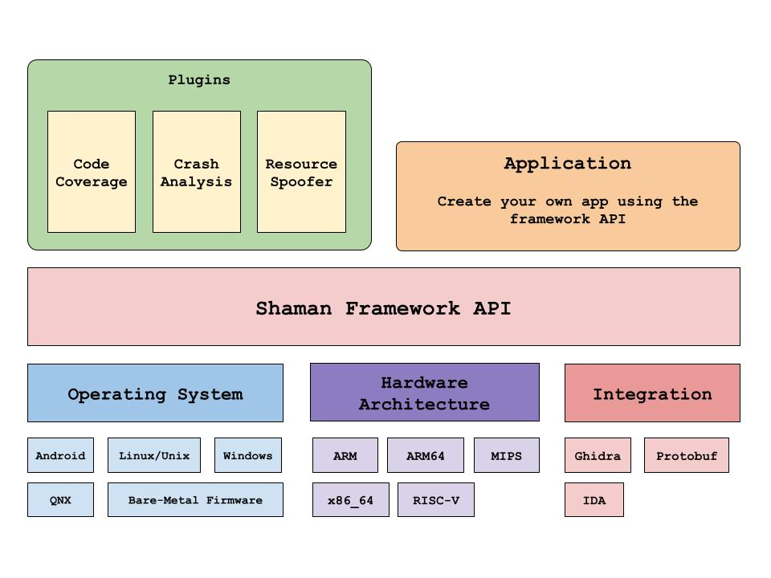

Shaman DBI
Shaman is a platform-independent Dynamic Binary Analysis Framework designed to instrument programs without needing to recompile them or access their source code. It currently supports Linux (x86_64, ARM, ARM64) and Android (ARM64).
Think of it as a high-performance, scriptable debugger that can pause a program at any point to inspect or modify its memory and registers. This functionality enables tasks like tracing or altering System Call parameter, Injecting System calls, Collecting binary code-coverage, and intercepting or modifying function parameters.
The framework aims to simplify writing plugins and make it fast and easy to support new platforms, such as RISC-V, Power PC, MIPS, etc.
Why ?
This project started as a personal endeavor to create an instrumentation and debugging tool. As it evolved, I aimed to use it for gathering code coverage on black-box binaries. The process of adapting it for various targets led to the development of APIs that encapsulate these capabilities into a comprehensive framework.
Existing instrumentation tools range from full-system tools like DynamoRIO, Intel Pintool, Frida, and Valgrind, which can be complex and have significant performance overhead, to selective tools like TinyInst and Mesos, which focus on specific areas. This framework leans towards selective instrumentation, providing APIs for customized instrumentation of specific targets.
The framework offers an interface that facilitates adaptation to other operating systems and architectures, such as RISC-V and PowerPC. It includes unique features like system call injection, resource tracing, and real-time code coverage streaming, all accessible through APIs.
The goal of this framework is to consolidate dynamic reverse-engineering techniques from various projects into a unified set of APIs, particularly for reverse-engineering binaries without source code.
How to use Shaman Framework?
Shaman is designed as a framework for building tools using its APIs. Many features are provided through classes that can be inherited to implement your own logic, which you then register with the Debugger class. You can find more details about the APIs in the [next section](#instrumentation-api).
To start instrumenting your target, first create an instance of the Debugger class and pass in a TargetDescription, which specifies the architecture of the program being executed. If you want to trace system calls, call traceSyscall(), and if you want to trace child processes, use followFork(). You can then attach to a running process with debug.attach(pid) or start a new process with debug.spawn(“program param”).
After configuring the debugger, execute it with debug.eventLoop(). This function is a blocking call that returns when the tracee completes execution or crashes. Be sure to register all events, like breakpoints and system calls, before calling this function.
Instrumentation API
Breakpoint Callback
You can insert a software breakpoint at any location in the program and receive a callback when it’s triggered. To set a breakpoint, inherit from the Breakpoint class and override the Breakpoint::handle function to define your custom breakpoint handling logic. In the Breakpoint constructor, provide the module name and the offset from the base address. The framework will then automatically calculate the actual breakpoint address and insert the breakpoint for you.
To know more about this see.
Syscall Tracing Callback
This callback provides details about the system calls the program is making, allowing you to intercept the event both before the call reaches the kernel and after it returns. You can override the SyscallHandler::onEnter and SyscallHandler::onExit callbacks to get notifications for every system call the program makes.
Beyond tracing, you can also modify system call parameters before they enter the kernel or adjust the return values after they exit the kernel. Known as system call hijacking, this feature is used by various tools to implement process jailing, which restricts access to certain system files or sockets by failing specific system calls. It can also be used for fuzz testing by modifying system calls that handle file or network data.
To know more about this see.
Binary Code-Coverage
Using these features, you can set breakpoints on all basic blocks and collect addresses as each block is executed. This is particularly useful if you don’t have access to the source code or cannot recompile the target.
You can also use single-shot breakpoints, which are removed after they’re hit. This type of coverage instrumentation can improve performance if you’re only interested in knowing whether a specific piece of code has executed.
This feature is already implemented in the BreakpointCoverage and BreakpointReader classes. Basic block addresses for the binary can be identified using disassembly tools like Ghidra or IDA, and a Ghidra script is included in the repository.
Coverage data can be saved to a file using the CoverageTraceWriter class, and you can later process this data with the Python script coverage_parser.py.
To know more about this see.
Resource Tracing
Resource Tracing provides you an interface for tracing different Software Resources via ResourceTracer interface. This interface exposes life-cycle method which gets invoked when the resource you are tracing is been operated on.
This features is just a glorified syscall handler, you basically get callback when there are operation done on resource.
To know more about this see.
Syscall Injection API
This feature allows you to execute system calls within a running process. To use it, inherit from the SyscallInject class and set the system call arguments. Once the injection is complete, the SyscallInject::onComplete callback is triggered, where you can record the system call’s return value.
To know more about this see.
Platform Support
Platfrom |
x86_64 |
ARM |
ARM64 |
MIPS |
RISC-V |
|---|---|---|---|---|---|
Linux |
Yes |
Yes |
Yes |
Planned |
Planned |
Android |
No |
No |
Yes |
No |
No |